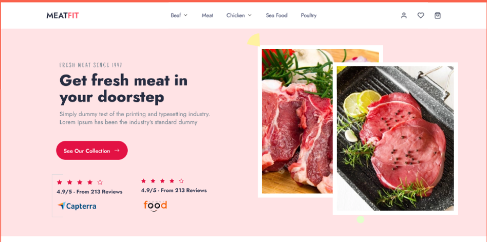
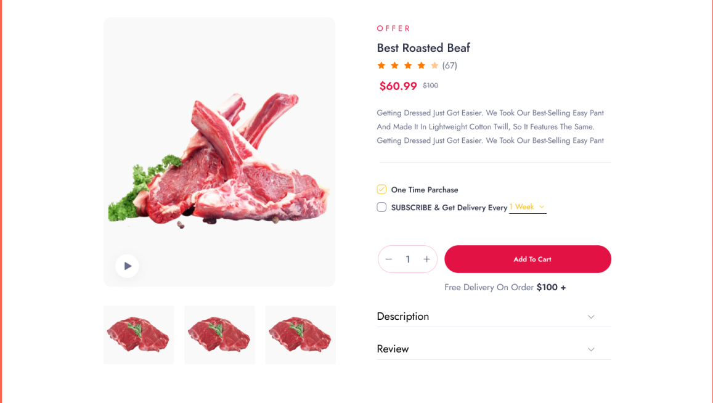
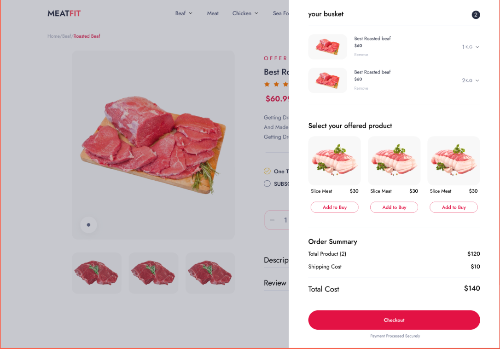

Stage 2ème Année – Boucherie Agadir

Boucherie Agadir – Mourenx
Stage de 6 semaines au sein de la Boucherie Agadir à Mourenx, réalisé en binôme. Développement d'une solution web complète incluant un catalogue produits, des promotions, un panier et un système de Click & Collect.
Présentation et Contexte
La Boucherie Agadir souhaitait moderniser son activité avec un outil numérique permettant à ses clients de consulter les produits, profiter de promotions et passer commande à distance. L'objectif : une expérience fluide, du catalogue jusqu'à la validation.
J'ai travaillé en binôme : mon camarade a pris en charge l'environnement Docker et le back-end PHP, je me suis concentré sur la base de données, l'intégration front-end et les maquettes Figma.
Fonctionnalités du site
- Catalogue produits : l'administrateur peut ajouter, modifier et supprimer ses produits depuis une interface dédiée.
- Système de promotions : création d'offres promotionnelles affichées automatiquement côté client.
- Panier dynamique : ajout d'articles, modification des quantités, récapitulatif en temps réel.
- Click & Collect : commande en ligne et retrait en boutique à l'heure souhaitée.
- Espace client : création de compte, connexion sécurisée, suivi des commandes.

Gestion des produits (back-office)

Gestion des promotions (back-office)
Conception de la Base de Données
À partir du cahier des charges, j'ai modélisé un schéma relationnel sous MySQL comprenant 14 tables. L'enjeu : anticiper tous les cas d'usage (produits, catégories, promotions, comptes clients, panier, commandes, statuts).

Cliquez pour agrandir – Schéma relationnel (14 tables)
Cette étape m'a appris à traduire des besoins métier en une structure de données robuste, un exercice exigeant mais essentiel avant toute ligne de code.
Maquettes Figma et Intégration Front-End
Avant l'intégration, j'ai réalisé une phase de recherche visuelle (sites de boucheries, Figma Community) pour définir une direction graphique sobre et lisible, adaptée à une clientèle de proximité.

Maquette – Page d'accueil

Maquette – Catalogue produits

Maquette – Panier
L'intégration a été réalisée en HTML, CSS et JavaScript vanilla, avec un soin particulier porté à la responsivité mobile.
Aperçu du site final


{kind=link}
{kind=link}
{kind=link}
{kind=link}
Environnement de Développement – Docker
Mon camarade a configuré les conteneurs Docker (serveur web, PHP, MySQL). J'ai appris à utiliser cet environnement au quotidien : lancer les conteneurs, interagir avec la base et comprendre l'intérêt de la conteneurisation pour un travail en équipe.
Technologies et Outils
Compétences du Référentiel SIO
- Bloc 1 : 1.2 (Réponse aux demandes), 1.3 (Présence en ligne), 1.4 (Mode projet).
- Bloc 2 (SLAM) : 2.1 (Conception et développement), 2.2 (Maintenance évolutive), 2.3 (Gestion des données).
- Bloc 3 (Cybersécurité) : 3.5 (Vérification de la qualité et des accès sécurisés).
Bilan
Ce stage a été très formateur. Travailler en binôme sur un projet réel m'a confronté à des contraintes concrètes : besoins qui évoluent, délais à tenir, choix techniques impactants.
La conception de la base de données a été l'exercice le plus enrichissant : penser le projet dans sa globalité avant d'écrire la moindre ligne de code. Ce stage a renforcé ma volonté de poursuivre dans le développement web.